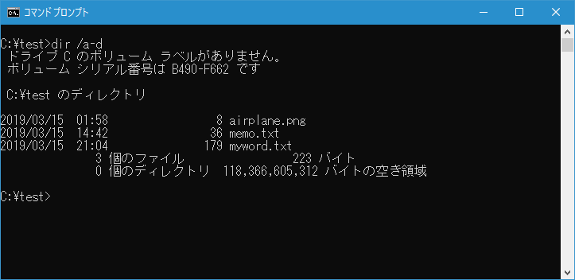
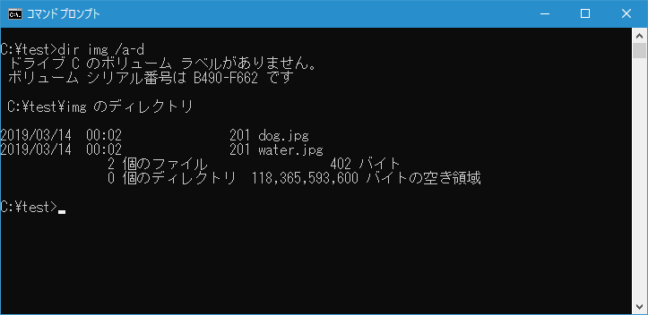
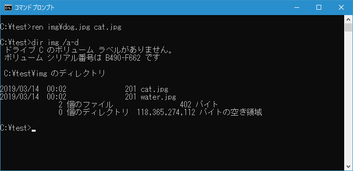
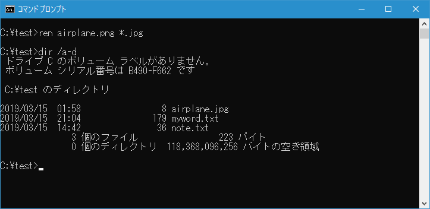
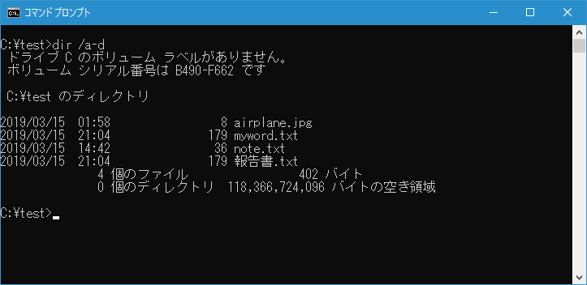
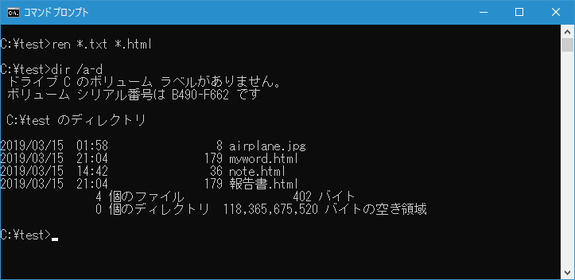

ファイル名の変更(REN, RENAME)
ファイル名の変更を行うことができる REN コマンドの使い方について解説します。複数のファイルをまとめて変更することができます。
RENコマンドの使い方
REN コマンドを実行すると対象のファイルの名前を変更することができます。書式は次の通りです。
REN [ドライブ:][パス]ファイル名1 ファイル名2
REN コマンドの引数として変更前のファイル名と変更後のファイル名を指定します。
なお RENAME コマンドを使っても同じ結果となります。
RENAME [ドライブ:][パス]ファイル名1 ファイル名2
ファイルの名前を変更する
カレントディレクトリにある memo.txt を新しいファイル名 note.txt に変更するするには次のように実行します。
ren memo.txt note.txt
変更前のカレントディレクトリには次のようなファイルがありました。

REN コマンド実行後、 memo.txt が note.txt に名前が変更となりました。
対象のファイル名はパス付きで指定することもできます。カレントディレクトリの中のサブディレクトリの中にある img\dog.jpg を新しいファイル名 cat.jpg に変更するには次のように実行します。
ren img\dog.jpg cat.jpg
なお2番目の引数に指定できるのは名前だけです。パスをつけて指定することはできません。
変更前、対象のディレクトリには次のようなファイルがありました。

REN コマンド実行後、 dog.jpg が cat.jpg に名前が変更となりました。

ワイルドカードを使って複数のファイルの名前をまとめて変更する
REN コマンドの1番目の引数および2番目の引数にはワイルドカードを使用することができます。(ワイルドカードについては「ワイルドカードの使い方」を参照されてください)。
例えばカレントディレクトリにある airplane.png を拡張子だけ変更して airplane.jpg に変更するするには次のように実行します。
ren airplane.png *.jpg
変更前のカレントディレクトリには次のようなファイルがありました。

REN コマンド実行後、 airplane.png が airplane.jpg に名前が変更となりました。

-- --
次にカレントディレクトリにある拡張子が .txt のファイルをすべて拡張子が .html に変更するするには次のように実行します。
ren *.txt *.html
変更前のカレントディレクトリには次のようなファイルがありました。

REN コマンド実行後、拡張子が .txt だったファイルがすべて拡張子が .html に変更となりました。

-- --
REN コマンドを使ってファイルの名前を変更する方法について解説しました。
( Written by Tatsuo Ikura )

著者 / TATSUO IKURA
初心者～中級者の方を対象としたプログラミング方法や開発環境の構築の解説を行うサイトの運営を行っています。